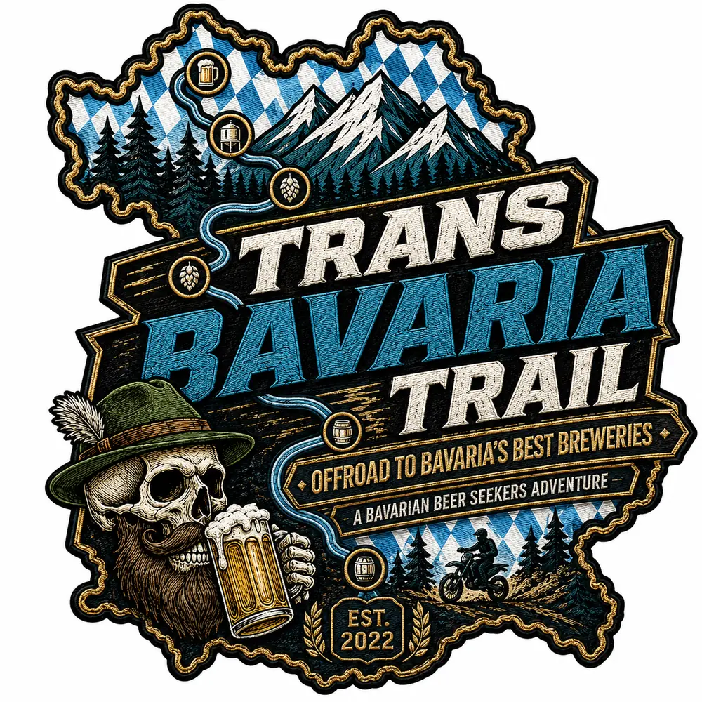

Find the long way.
Nebenstraßen, Schotter und Landschaften, die auf der schnellsten Route nicht vorkommen.

A Bavarian Beer Seekers Adventure
Offroad · Bavaria · Breweries
Ein Trailprojekt zwischen Voralpen, Wäldern, legalen Schotterpassagen und den Brauereien, bei denen man nach einem langen Fahrtag wirklich ankommen will.
Kein Rennen. Keine Kaffeefahrt.
Der Trans Bavaria Trail soll kleine Straßen, legalen Schotter, wilde Landschaften und besondere Brauereien zu einem großen bayerischen Abenteuer verbinden.
Kein Wettbewerb und keine Route für Hektiker. Sondern ein sorgfältig gescouteter Track für kleine Crews, respektvolles Fahren und die Geschichten, die nur auf Umwegen entstehen.
Nebenstraßen, Schotter und Landschaften, die auf der schnellsten Route nicht vorkommen.
Kleine Brauereien, alte Keller und ehrliche Gasthöfe statt anonymer Zwischenstopps.
Gebaut von den Bavarian Beer Seekers. Für Freunde, die lieber Geschichten sammeln.
Route in the making
Kurven, Schotter und die nächste gute Geschichte.
Nur was funktioniert, verdient einen Platz im Track.
Leise, respektvoll und immer mit Luft für Plan B.
Das Bier beginnt dort, wo der Fahrtag endet.
How we ride
Abenteuer funktioniert nur, wenn es auch morgen noch möglich ist. Deshalb ist der Umgang mit Wegen, Menschen und Landschaft kein Nebensatz, sondern Teil der Route.
Project status
Der Trans Bavaria Trail entsteht Kilometer für Kilometer. Erst suchen wir. Dann fahren wir. Dann wird aus einer ziemlich guten schlechten Idee ein echtes bayerisches Abenteuer.